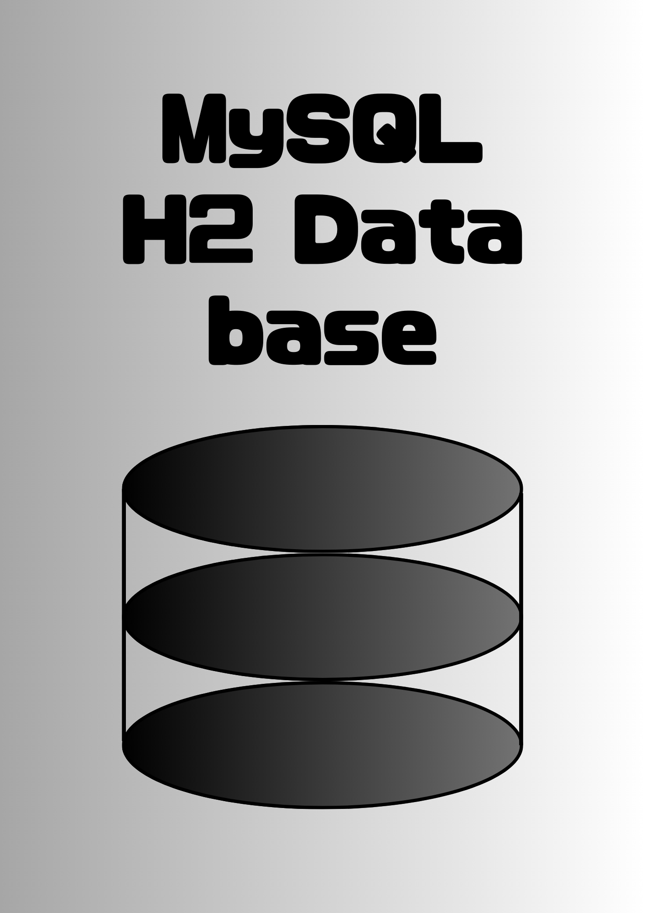

Scroll

MySQLの基本概念と特長を理解します。
MySQLのインストール手順を学びます。
SELECT、INSERT、UPDATE、DELETE文の基本を学びます。
CREATE、ALTER、DROP文を使ってテーブルを管理します。
MySQLのデータ型と各種制約を理解します。
インデックスの作成とクエリの最適化について学びます。
INNER JOIN、LEFT JOIN、RIGHT JOINの使い方を理解します。
サブクエリの基本と実用例を学びます。
COMMIT、ROLLBACKを使ったトランザクション管理を理解します。
ストアドプロシージャとトリガーの作成と利用方法を学びます。
ユーザー管理とアクセス権の設定について理解します。
データのバックアップ方法とリストアの手順を学びます。
クエリの最適化とパフォーマンスチューニングについて学びます。
MySQL Workbenchを使ったデータベース設計と管理を学びます。
MySQLの異なるバージョンの特徴と選択基準を理解します。